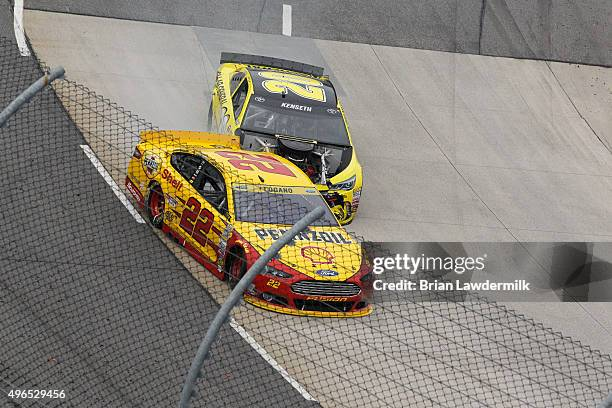
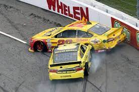
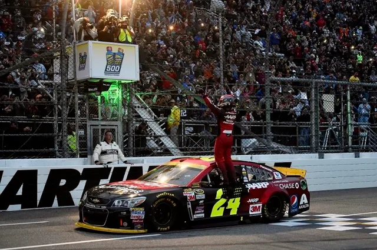

My origins
I first became aware of NASCAR back when I was a kid playing video games with NASCAR 07 on the XBOX. I was instantly drawn to the speed and excitement of the sport as I spent hours playing the game growing up as shown in the video below.
However, while I attended a race in 2012 at the Auto Club Speedway, and played the games such as NASCAR 09 and NASCAR 2011 The Game, I didn't fully start following the sport until around 2015 when I randomly watched a Martinsville race on TV, where I became captivated by the intensity and strategy involved.


